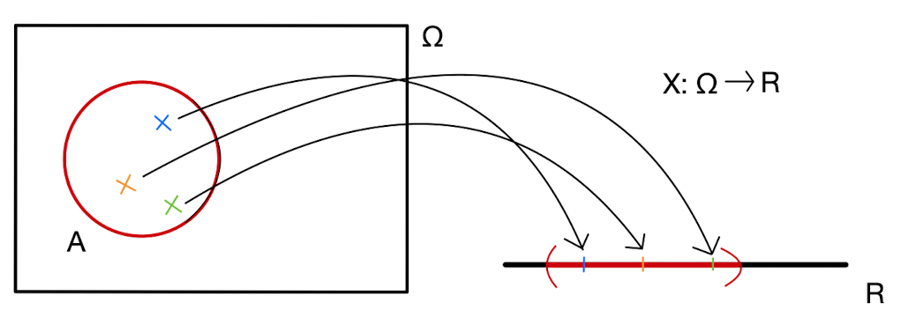
4 Náhodná premenná
Doteraz sme si zadefinovali pravdepodobnostný priestor. Bola to trojica \((\Omega,\mathcal{F},P).\) Kým \(\Omega\) bola akákoľvek neprázdna množina, \(\mathcal{F}\) aj \(P\) museli spĺňať nejaké podmienky, napríklad \(P\) musela byť spočitateľne aditívna.
Prvky v množine \(\Omega\) mohli byť úplne akékoľvek objekty, mohlo to byť číslo 5, mohol to byť symbol \(\omega_1\), slovo “zemiak”, obrázok domčeka alebo veta “na kocke padlo číslo 6”. Bolo to čokoľvek, čo opisovalo to, čo mohlo nastať.
Teraz sa ideme posunúť konceptuálne ďalej. Našou ambíciou bude kvantifikovať náhodnosť ešte podrobnejšie.
V mnohých situáciách je užitočné nielen uvažovať, či nejaká udalosť nastane alebo nie.
- Koľko bude zajtra stupňov?
- Aká bude koncom roka cena ropy?
- Aký padne súčet čísiel na dvoch kockách?
Aj na tieto otázky je férová a úprimná odpoveď: “Neviem.” Tieto otázky totiž so sebou nesú nejakú neistotu. Odpoveď “Neviem.” je pravdivá ale neužitočná. Chceli by sme nejakým spôsobom kvantifikovať náhodnosť, teda reprezentovať to, čo vieme o týchto otázkach povedať. Lebo nie je “náhodne” ako “náhodne”, sú rôzne typy náhodnosti. Keď hodím 10 krát mincou, tak zhruba v polovici prípadov padne hlava, ale je to neisté. Keď hodím mincou 1000 krát, proporcia padnutých hláv bude tiež okolo jednej polovice. Každopádne tej neistoty v tom bude ovela menej. Kým pri desiatich hodoch padne 7 hláv hocikedy, tak pri tisíc hodoch je 700 hláv extrémne prekvapivá udalosť.
Na to aby sme s ňou vedeli pracovať, musíme zaviesť nový pojem - náhodná premenná. Náhodná premenná premietne tú našu veľmi abstraktnú množinu udalostí \(\Omega\) na číselnú os. Toto je ohromne užitočné. S číslami totiž vieme veľmi šikovne narábať. Vieme sa pýtať, či je niečo väčšie alebo menšie, čísla vieme sčítavať, násobiť, deliť, transformovať (aplikovať na ne funkcie). Celý matematický aparát, všetko, čo vieme o funkciách, limitách, deriváciách, zrazu všetko toto budeme vedieť používať na to, aby sme spresňovali vyjadrenie náhodnosti. Aby sme vedeli kvalitnejšie odpovedať na otázky, na ktoré je odpoveď “Neviem.” síce pravdivá ale neužitočná.
4.1 Čo je to náhodná premenná.
Majme pravdepodobnostný priestor \((\Omega,\mathcal{F},P).\)
Funkciu \(X: \Omega \rightarrow \mathbb{R}\) nazývame náhodná premenná ak pre všetky \(x \in \mathbb{R}\) platí \[\{\omega \in \Omega: X(\omega) \leq x\} \in \mathcal{F}.\] Toto je len technický zápis toho, že náš pravdepodobnostný priestor musí mať dostatočne bohatú množinu udalostí \(\mathcal{F}\), ktorým vie priradiť pravdepodobnosť. Takú bohatú, aby sme vedeli priradiť pravdepodobnosť udalosti “náhodná premenná \(X\) je menšia alebo rovná ako \(x\)”.1
Náhodná premenná je užitočný koncept, keď je výsledkom experimentu nejaké číslo. No a to je veľmi často. Teplota zajtra, cena ropy, súčet na dvoch kockách. Odteraz budeme pre množinu \(\{\omega \in \Omega: X(\omega) \leq x\}\) používať skrátený zápis \(\{X \leq x\}\) a pre množinu \(\{\omega \in \Omega: X(\omega) \in A\}\) takýto zápis \(\{X \in A\}.\)
Príklad 4.1 Hádžeme férovou kockou. Označme \(\Omega = \{1,2,3,4,5,6\},\) kde napr. \(4\) značí, že na kocke padlo číslo \(4\). Nech \(\mathcal{F} = 2^{\Omega}\) a nech \(P(A) = \frac{|A|}{6}.\) Označme písmenom \(X\) náhodnú premennú, ktorá bude označovať číslo, ktoré padne na kocke. Náhodná premenná \(X\) priradí každému elementu \(k\) z \(\Omega\) reálne číslo nasledovne: \(X(k) = k.\) Množina \(\{X \leq x\} = \{\omega \in \Omega: X(\omega) \leq x\}\) musí byť v \(\mathcal{F}\) pre všetky \(x \in \mathbb{R}.\) Napríklad
- \(\{X \leq -2\} = \emptyset \in \mathcal{F},\)
- \(\{X \leq 0.5\} = \emptyset \in \mathcal{F},\)
- \(\{X \leq 2.3\} = \{1,2\} \in \mathcal{F},\)
- \(\{X \leq 11.9\} = \Omega \in \mathcal{F}.\)
Množina \(2^{\Omega}\) je preto dostatočne “bohatá” na to, aby na nej bola táto funkcia \(X\) náhodnou premennou.
Príklad 4.2 Znovu hádžeme férovou kockou. Označme \(\Omega = \{1,2,3,4,5,6\},\) kde napr. \(4\) značí, že na kocke padlo číslo \(4\). Nech množina udalostí \(\mathcal{F^*} = \left\{\emptyset, \Omega, \{1,3,5 \}, \{2,4,6 \} \right\}\) je tentokrát “chudobnejšia” a nech \(P(A) = \frac{|A|}{6}.\) Označme písmenom \(Y\) funkciu, ktorej hodnota bude 1, ak bude číslo párne a 0 ak bude nepárne.
Množina \(\{Y \leq y\} = \{\omega \in \Omega: Y(\omega) \leq y\}\) musí byť v \(\mathcal{F}^*\) pre všetky \(y \in \mathbb{R}.\) Napríklad
- \(\{Y \leq -2\} = \emptyset \in \mathcal{F^*},\)
- \(\{Y \leq 0.5\} = \{1,3,5 \} \in \mathcal{F^*},\)
- \(\{Y \leq 2.3\} = \Omega \in \mathcal{F^*},\)
- \(\{Y \leq 11.9\} = \Omega \in \mathcal{F^*}.\)
Takže aj v tomto prípade je menšia \(\mathcal{F^*}\) stále dostatočne bohatá na to, aby na nej bola táto funkcia \(Y\) náhodnou premennou. Je však funkcia \(X\) z predošlého príkladu náhodnou premennou aj na \((\Omega,\mathcal{F^*})\) ?
Nie je. Množina \(\{X \leq 2.3\} = \{1,2\} \notin \mathcal{F^*}\) a preto nespĺňa definíciu náhodnej premennej. V definícii sme zvolili \(x=2.3.\)
Poučenie: kým množina udalostí \(\mathcal{F}\) bola dosť veľká, pri \(\mathcal{F^*}\) už nevieme priraďovať pravdepodobnosti hocijakým otázkam. Napriklad na to, aby sme vedeli priradiť pravdepodobnosť udalosti “Padne na kocke číslo menšie ako 2.3?” potrebujem, aby množina \(\{1,2\}\) bola tiež udalosťou. Ale to pri \(\mathcal{F^*}\) nie je. Množina udalostí \(\mathcal{F^*}\) totiž vie jedine rozlišovať, či pádne párne \(\{2,4,6\} \in \mathcal{F^*}\) alebo nepárne číslo \(\{1,3,5 \} \in \mathcal{F^*}\). Náhodnej premennej \(Y\) to ale nevadí, lebo ona “zlepí” hodnoty \(1\), \(3\) aj \(5\) do hodnoty \(0\), lebo všetky tieto hodnoty sú pre ňu rovnako nepárne.
Príklad 4.3 Hádžeme dvoma férovými kockami. Označme \(\Omega = \{(1,1),(1,2),(1,3),(1,4),(1,5),(1,6),(2,1),(2,2),(2,3),\cdots, (6,5),(6,6)\},\) kde napr. \((3,2)\) značí, že na prvej kocke padlo číslo \(3\) a na druhej kocke padlo číslo \(2\). Nech \(\mathcal{F} = 2^{\Omega}\) a nech \(P(A) = \frac{|A|}{36}.\) Označme písmenom \(X\) náhodnú premennú, ktorá bude označovať súčet dvoch čísiel, ktoré padnú na kockách. Náhodná premenná \(X\) priradí každému elementu \((k_1,k_2)\) z \(\Omega\) reálne číslo nasledovne: \(X((k_1,k_2)) = k_1 + k_2.\)
4.2 Kumulatívna distribučná funkcia
Na charakterizáciu náhodnej premennej budeme používať kumulatívnu distribučnú funkciu. Distribučná funkcia náhodnej premennej \(X\) je funkcia \(F_X: \mathbb{R} \rightarrow \mathbb{R},\) ktorá je definovaná nasledovne:
\[F_X(x) = P(X \leq x).\] Už z tejto definície máme niektoré jej vlastnosti
- \(F_X\) je neklesajúca funkcia,
- \(F_X\) je sprava spojitá,
- \(F_X(x) \in [0,1],\)
- \(\lim_{x \rightarrow -\infty} F_X(x) = 0\) a \(\lim_{x \rightarrow \infty} F_X(x) = 1.\)
Ďalšie vlastnosti kumulatívnej distribučnej funkcie sú nasledovné:2
- \(P(X \in (a,b]) = F_X(b) - F_X(a)\),
- \(P(X \in (a,b)) = \lim_{x \rightarrow b^-}F_X(x) - F_X(a)\),
- \(P(X \in [a,b)) = \lim_{x \rightarrow b^-}F_X(x) - \lim_{x \rightarrow a^-}F_X(x)\),
- \(P(X \in [a,b]) = F_X(b) - \lim_{x \rightarrow a^-}F_X(x)\),
- \(P(X < a) = \lim_{x \rightarrow a^-}F_X(x)\),
- \(P(X > a) = 1 - F_X(a)\),
- \(P(X = a) = F_X(a) - \lim_{x \rightarrow a^-}F_X(x)\).
Tieto vlastnosti nám ukazujú, že pomocou kumulatívnej distribučnej funkcie vieme vyjadriť pravdepodobnosť toho, že náhodná premenná nadobudne hodnotu v akomkoľvek intervale. Pripomeňme, že napríklad \(P(X \in [a,b))\) je len skrátený zápis pre pravdepodobnosť nasledovnej množiny \(P\left(\{\omega \in \Omega: a \leq X(\omega) < b \} \right).\)
Rovnosti
Zamyslite sa, či viete dané rovnosti formálne odvodiť s využitím vlastností pravdepodobnosti.
Kumulatívna distribučná funkcia poskytuje kompletnú informáciu o pravdepodobnostnom správaní náhodnej premenej. Inými slovami, úplne popisuje typ náhodnosti.
Príklad 4.4 Hádžeme férovou kockou a máme náhodnu premennú číslo, ktoré padlo na kocke \(X\) a identifikátorovú premennú \(Y\) čí padlo párne číslo ako v Príklad 4.1 a Príklad 4.2.
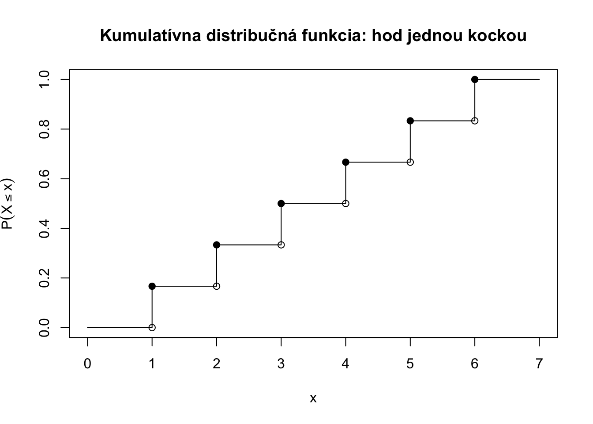
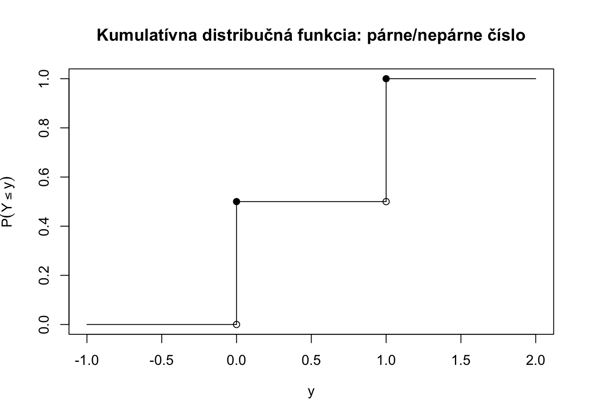
Príklad 4.5 Hádžeme dvoma férovými kockami a máme náhodnu premennú súčet dvoch kociek \(X\) ako v príklade @ref(exm:dvekocky).
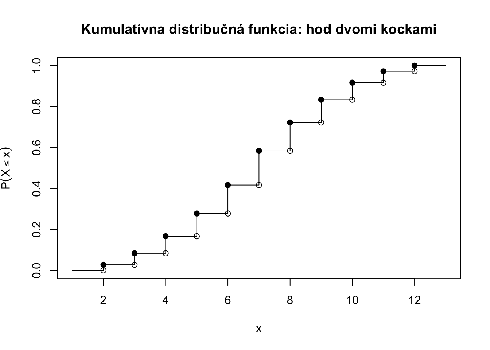
Príklad 4.6 Predpokladajme, že náhodná premenná \(X\) reprezentuje IQ v populácii, jej kumulatívna distribučná funkcia môže vyzerať napríklad takto:
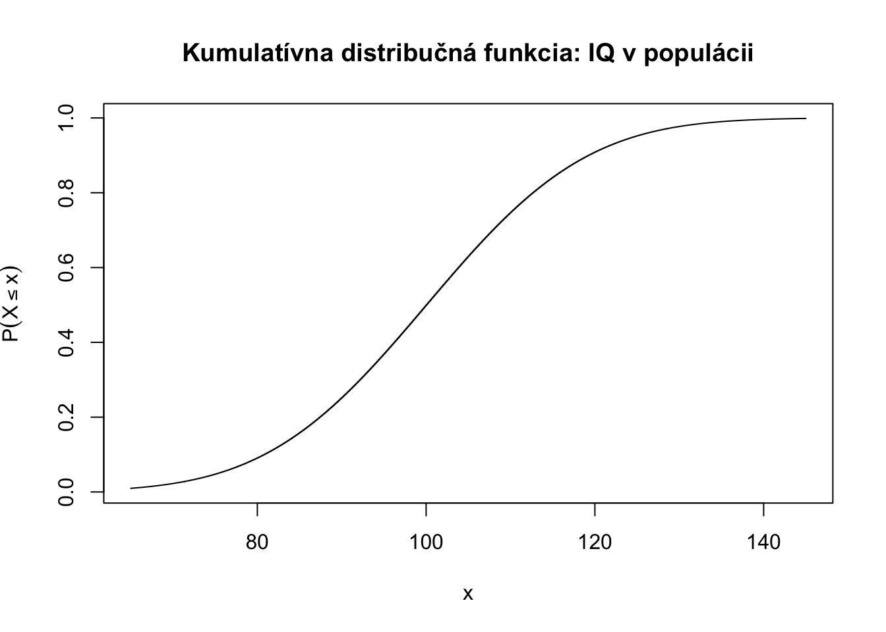
Príklad 4.7 Hádžeme sedemnástimi férovými kockami a máme náhodnú premennú súčet sedemnástich kociek \(X\) ako v príklade @ref(exm:dvekocky), kde boli len dve.
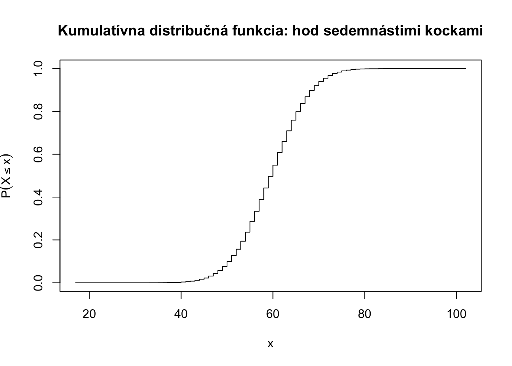
Príklad 4.8 Vyška mužov (modrou) a žien (červenou), v populácii kde je 60% žien. Celková kumulatívna distribučná funkcia pre mužov a ženy spolu je čiernou.
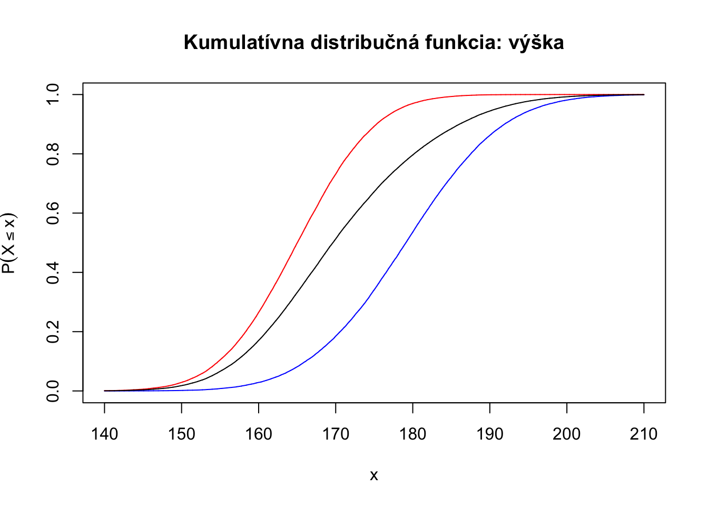
Príklad 4.9 Uvažujme výšky z predchádzajúceho príkladu. Majte nasledovnú súťaž. Človek hodí mincou: ak padne hlava (\(M=1\)), tak vyhrá cenu vo výške (v eurách) svojej výšky v cm \(H\). Ak padne znak (\(M=0\)), tak nevyhrá nič. Výhra je teda \(V = H \cdot M\).
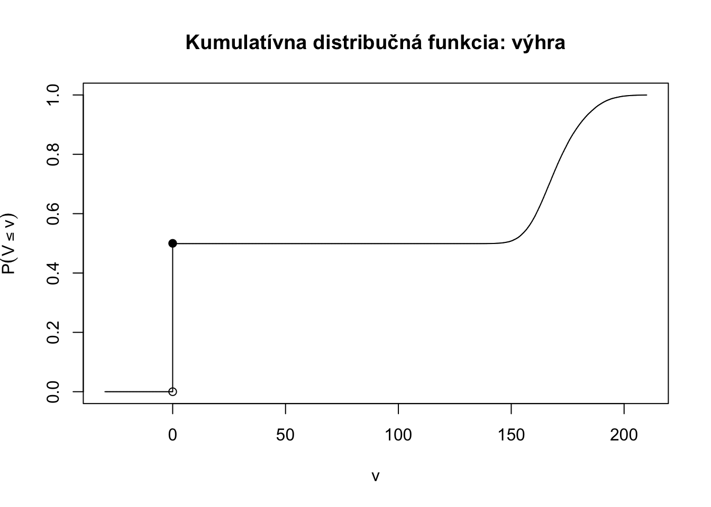
4.3 Zhrnutie
Náhodná premenná je nástroj, ktorý nám umožnuje dostať abstraktný pravdepodobnostný priestor na reálnu os a počítať s náhodnosťou. Jedným zo spôsobov ako ju úplne popísať je kumulatívna distribučná funkcia.
4.4 Čo bude nasledovať
Teraz sme si zadefinovali nový pojem - náhodnú premennú. Zároveň tiež nástroj na popis náhodnosti - kumulatívnu distribučnú funkciu \(F\). Teraz sa budeme veľmi podrobne venovať dvom rodinám náhodných premenných. Diskrétnym a Spojitým. Obe vieme popísať pomocou \(F\) ale iné nástroje na popis náhodnosti sú iné. V rámci týchto rodín budeme mať ešte druhy náhodných premenných. Sú totiž dostatočne zaujímavé na to, aby sme ich nejak pomenovali. Zaslúžia si to. Budeme skúmať vlastnosti týchto druhov/typov náhodných premenných, ako aj ich využitie v aplikáciách (na toto nie ste zvyknutí, že).
Diskrétne náhodné premenné
Nadobúdajú len konečne alebo nanajvýš spočitateľne veľa hodnôt.
Príklady
- počet dopravných nehôd
- počet hláv pri 10 hodov mincou
- počet prijatých emailov za jeden deň
- počet vyrobených súčiastok
- rozdiel medzi počtom úspechov a neúspechov
Typy
- rovnomerné rozdelenie,
- Bernoulliho rozdelenie,
- binomické rozdelenie,
- Poissonovo rozdelenie,
- geometrické rozdelenie,
- hypergeometrické rozdelenie,
- negatívne binomické rozdelenie.
Spojité náhodné premenné
Nadobúdajú nespočitateľne veľa hodnôt.
Príklady
- teplota,
- nadmorská výška,
- čas, kým nenastane ďalšia nehoda,
- šírka slonieho ucha.
Typy
- rovnomerné rozdelenie,
- normálne rozdelenie,
- binomické rozdelenie,
- exponenciálne rozdelenie,
- chí-kvadrát rozdelenie,
- Studentovo rozdelenie.
4.5 Cvičenia
Cvičenie 4.1 Podrobne vysvetlite, čo je chybné na nasledovných označeniach/tvrdeniach:
- \(F_X(0.5)=1.3\),
- \(F_X(0.5)=-\pi/3\),
- \(F_X(8)=\infty\),
- \(F_X(8)\cdot F_Y(2) = 16\),
- \(\lim_{x \rightarrow 2} F_X(x) = \infty\),
- \(F_Z(\{Z \in (-\infty,3] \}) = 0.5\),
- \(F_Y(A) = P(\{Y \in A\})\),
- \(\Omega = 5\),
- \(\mathcal{F} = 2^\Omega = 32\).
Cvičenie 4.2 Majme náhodnú premennú \(M\), ktorá nadobúda hodnoty \(1, 2, 3, \dots\) s pravdepodobnosťami \(P(M=m) = \frac{1}{2^m}.\)
- Nájdite kumulatívnu distribučnú funkciu \(M\),
- Vypočítajte \(P(3 < M \leq 7),\)
- Vypočítajte \(P(M > 3).\)
Cvičenie 4.3 Nie každý sa môže stať kozmonautom alebo pilotom a podobne nie každá funkcia z \(\mathbb{R} \rightarrow [0,1]\) môže byť korektnou kumulatívnou distribučnou funkciou.
Overte, či tieto nasledujúce funkcie môžu byť kumulatívnou distribučnou funkciou.
- \(F(x) = \begin{array}{ll} 1 - 4^{-x}, & \text{ak } x \geq 0, \\0, & \text{ak } x < 0. \end{array}\)
- \(F(x) = \begin{cases} 0&\text{pre $x<a$},\\ \frac{x-a}{b-a}&\text{pre $x\in[a,b)$},\\ 1&\text{pre $x\ge b$},\\ \end{cases}\)
- \(F(x) = \frac{e^x}{1+e^x},\)
- \(F(k) = \sum_{i=1}^k \frac{1}{2^k},\)
- \(F(k) = \sum_{i=1}^k \exp\left({ \frac{(-1)^{k+1}}{k}}\right),\)
- \(F(k) = \frac{3}{\pi}\sum_{i=1}^k { \frac{1}{k^2}}.\)
Cvičenie 4.4 Uvažujme hádzanie jednou kockou. Nech \(\Omega=\{ 1,2,3,4,5,6\}\) a nech \(\mathcal{F} =\{\Omega, \emptyset, \{1\},\{2,3,4,5,6\} \}.\) Zostrojte dve funkcie \(X_1: \Omega \rightarrow \mathbb{R}\) a \(X_2: \Omega \rightarrow \mathbb{R}\) také, že
- \(X_1\) je náhodná premenná,
- \(X_2\) nie je náhodná premenná.
Cvičenie 4.5 Uvažujme náhodnú premennú \(Y\) ktorá nadobúda hodnoty \(0, 1, 2, 3\) s pravdepodobnosťami \(0.5, 0.25, 0.125, 0.125\). Zobrazte jej kumulatívnu distribučnú funkciu.
Cvičenie 4.6 Načrtnite dve rôzne kumulatívne distribučné funkcie \(F_X, F_Y\) (pre náhodné premenné \(X\) a \(Y\)) pre ktoré platí \(F_X(120) = F_Y(120) = 0.5\), \(F_X(140) > F_Y(140)\) a \(F_X(90) < F_Y(90).\)
Načrtnite, ako by vyzerala kumulatívna distribučná \(S = ZX + (1-Z)Y\), kde náhodná premenná \(Z\) má nasledovnú kumulatívnu distribučnú funkciu:
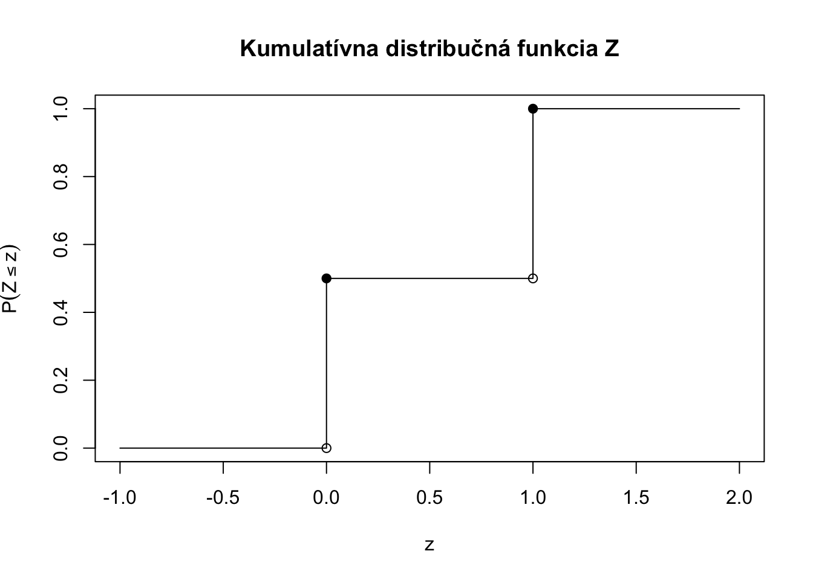
Cvičenie 4.7 Na Univerzite je 60% žien a 40% mužov. Náhodne vybratý študent/ka odpovedá na dotazník. Dotazník pre mužov má 20 otázok, dotazník pre ženy má 25 otázok. Nech \(X\) označuje počet opýtaných otázok pre náhodne zvoleného človeka. Určite \(P(X\leq x)\) pre všetky \(x \in \mathbb{R}.\)
Cvičenie 4.8 Nech \(X\) je číslo, ktoré padne na vrchu férovej kocky. Nech \(Y=X^3+1\) a \(Z=\sqrt{X}.\) Určite
- \(P(Y=y)\) pre všetky reálne čísla \(y \in \mathbb{R}\),
- \(P(Z=z)\) pre všetky reálne čísla \(z \in \mathbb{R}\),
- \(P(YZ=x)\) pre všetky reálne čísla \(x \in \mathbb{R}\),
- \(P(Y+Z=v)\) pre všetky reálne čísla \(v \in \mathbb{R}\).
Cvičenie 4.9 Označme číslo, ktoré padne na falošnej kocke, na ktorej padá 6ka dvakrát tak často ako iné čísla, ako \(X.\) Zobrazte kumulatívnu distribučnú funkciu náhodnej premennej \(X\).
Niektoré riešenia
- \(F_X(0.5)=1.3\), - pravdepodobnosť nemôže byť väčšia ako 1
- \(F_X(0.5)=-\pi/3\), - pravdepodobnosť nemôže byť menšia ako 0
- \(F_X(8)=\infty\), - pravdepodobnosť nemôže byť väčšia ako 1
- \(F_X(8)\cdot F_Y(2) = 16\), - súčin dvoch pravdepodobností nemôže byť viac ako 1
- \(\lim_{x \rightarrow 2} F_X(x) = \infty\), - pravdepodobnosť nemôže byť väčšia ako 1
- \(F_Z(\{Z \in (-\infty,3] \}) = 0.5\), - \(F_Z\) je zobrazením z množiny reálnych čísel \(\mathbb{R}.\)
- \(F_Y(A) = P(\{Y \in A\})\), - je zobrazením z množiny reálnych čísel \(\mathbb{R}.\)
- \(\Omega = 5\), - \(\Omega\) musí byť množinou
- \(\mathcal{F} = 2^\Omega = 32\). - \(2^\Omega\) je skrátený zápis pre všetky podmnožiny \(\Omega\), nie je to číslo.
- \(F_M(n) = P(M\leq x) = \sum_{m = 1}^{n} \frac{1}{2^m},\) pre \(n \in \mathbb{N}\)
- \(P(3 < M \leq 7) = F_M(7) - F_M(3) =\sum_{m = 1}^{7} \frac{1}{2^m} - \sum_{m = 1}^{3} \frac{1}{2^m} = \frac{1}{2^7} + \frac{1}{2^6} + \frac{1}{2^5} + \frac{1}{2^4}\)
- \(P(M > 3) = 1 - P(M \leq 2) = 1 - \frac{1}{2^1} - \frac{1}{2^2} = \frac{1}{4}.\)
Prvé štyri OK, posledné dve nespĺňajú \(\lim_{x \rightarrow \infty} F_X(x) = 1.\)
Podobný príklad sme ukázali na prednáške podrobne.
Nech \(X_1(1) = c_1\), \(X_1(2) = X_1(3) = X_1(4) = X_1(5) = X_1(6) = c_2,\) kde \(c_1 \neq c_2.\)
Bez straty na všeobecnosti nech \(c_1 < c_2.\) Potom
\(\{\omega \in \Omega: X(\omega) \leq x \} = \begin{cases} \emptyset, & \text{if } x < c_1 \\ \{1\}, & \text{if } x \in [c_1,c_2) \\ \Omega, & \text{if } x \geq c_2 \\ \end{cases}\)
a všetky tieto množiny patria do \(\mathcal{F}\), takže \(X_1\) je náhodnou premennou na pravdepodobnostnom priestore \((\Omega,\mathcal{F},P)\).
Nech \(X_2(k) = k\), pre \(k=1,2,3,4,5,6.\)
Potom, \(\{\omega \in \Omega: X(\omega) \leq 3.5 \} = \{1,2,3\} \notin\mathcal{F}\) a preto \(X_2\) nie je náhodnou premennou na pravdepodobnostnom priestore \((\Omega,\mathcal{F},P)\).
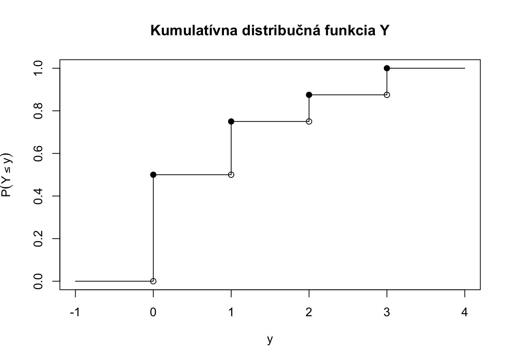
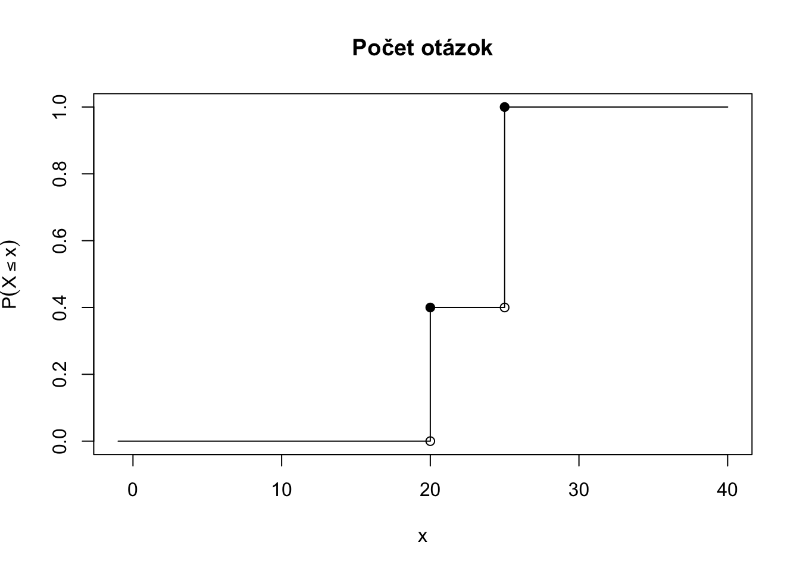
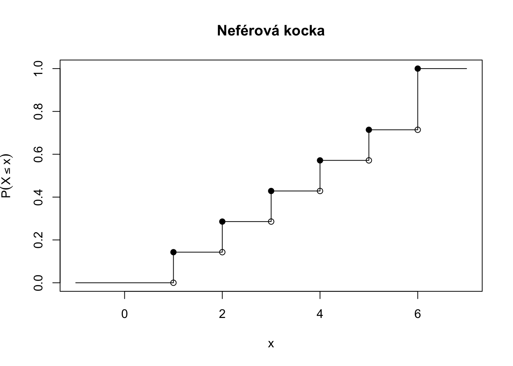
4.6 Ďalšie cvičenia
Cvičenie 4.10 Majme pravdepodobnostný priestor, ktorý modeluje to, ako môže dopadnúť futbalový zápas, o ktorom vieme, že žiaden tím nedal viacej ako 3 góly:
\(\Omega = \{3:0,3:1,3:2,0:3,1:3,2:3\}\),
\(\mathcal{F_1} = 2^{\Omega}\),
\(\mathcal{F_2} = \{\Omega, \emptyset, \{ 3:0,3:1,3:2 \}, \{0:3,1:3,2:3\}\}\),
\(\mathcal{F_3} = \{\Omega, \emptyset, \{ 3:0\}, \{3:1,3:2,0:3,1:3,2:3\}\}\),
\(\mathcal{F_4} = \{\Omega, \emptyset\}\).
Vymyslite:
funkciu \(X: \Omega \rightarrow \mathbb{R}\), ktorá je náhodnou premennou ak je priestor udalostí \(\mathcal{F_3}\), ale nie je náhodnou premennou ak je priestor udalostí \(\mathcal{F_2},\)
funkciu \(Y: \Omega \rightarrow \mathbb{R}\), ktorá je náhodnou premennou ak je priestor udalostí \(\mathcal{F_1}\), aj ak je priestor udalostí \(\mathcal{F_2}.\)
funkciu \(Z: \Omega \rightarrow \mathbb{R}\), ktorá je náhodnou premennou ak je priestor udalostí \(\mathcal{F_1}\), ale nie je náhodnou premennou ak je priestor udalostí \(\mathcal{F_2},\)
funkciu \(S: \Omega \rightarrow \mathbb{R}\), ktorá je náhodnou premennou ak je priestor udalostí \(\mathcal{F_1}\), aj ak je je priestor udalostí \(\mathcal{F_2}\), aj ak je priestor udalostí \(\mathcal{F_3}\).
funkciu \(T: \Omega \rightarrow \mathbb{R}\), ktorá je náhodnou premennou ak je priestor udalostí \(\mathcal{F_1}\), aj ak je je priestor udalostí \(\mathcal{F_2}\), aj ak je priestor udalostí \(\mathcal{F_3}\), aj ak je priestor udalostí \(\mathcal{F_4}\).
Svoje voľby podrobne zdôvodnite.
Cvičenie 4.11 Overte, či nasledujúce funkcie môžu byť kumulatívnou distribučnou funkciou.
\(F(x) = \begin{cases} 0&\text{pre $x<0$},\\ x^2/9&\text{pre $x\in[0,3]$},\\ 1&\text{pre $x > 3$},\\ \end{cases}\)
\(F(x) = \begin{cases} 0&\text{pre $x<a$},\\ \frac{x-a}{2b-a}&\text{pre $x\in[a,2b)$},\\ 1&\text{pre $x\ge 2b$},\\ \end{cases}\)
\(F(x) = \frac{e^x}{1+2e^x},\)
\(F(x) = \begin{cases} 1-3^{-x} & \text{ak } x \geq 0, \\ 0 & \text{ak } x < 0,\end{cases}\)
\(F(k) = \frac{3}{\pi}\sum_{i=1}^k { \frac{1}{k^2}}.\)
Cvičenie 4.12 Pre kumulatívnu distribučnú funkciu z Príklad 4.7 zistite približné hodnoty (stačí odčítať z grafu) nasledovných pravdepodobností
\(P(X \leq 54)\),
\(P(X < 17)\),
\(P(X \geq 33)\),
\(P(X \in [27,64])\).
Cvičenie 4.13 Pre kumulatívnu distribučnú funkciu z Príklad 4.6 zistite približné hodnoty (stačí odčítať z grafu) nasledovných pravdepodobností * Pravdepodobnosť, že náhodne vybraný človek bude mať IQ väčšie ako \(130\).
Pravdepodobnosť, že náhodne vybraný človek bude mať IQ menšie ako \(100\).
Pravdepodobnosť, že náhodne vybraný človek bude mať IQ v rozmedzí \((80,120)\).
Pravdepodobnosť, že náhodne vybraný človek bude mať IQ v rozmedzí \([80,120]\).
Cvičenie 4.14 Uvažujme \(\mathcal{F_3} = \{\Omega, \emptyset, \{ 3:0\}, \{3:1,3:2,0:3,1:3,2:3\}\}\) z Cvičenie 4.10.
Koľko najviac funkčných hodnôt a koľko najmenej funkčných hodnôt môže nadobúdať funkcia \(H: \Omega \rightarrow \mathbb{R},\) ktorá je náhodnou premennou na \((\Omega, \mathcal{F_3})\) ?
Cvičenie 4.15 Majme náhodnú premennú \(X\) na pravdepodobnostnom priestore \((\Omega, \mathcal{F},P).\)
Kde \(\Omega = \{w_1,w_2,w_3,w_4\}\) a \(\mathcal{F} = 2^{\Omega}\).
Doplňte:
Pravdepodobnosť je funkcia \(P: \ \ \ \ \ \ \rightarrow [0,1].\)
Náhodná premenná \(X\) na pravdepodobnostnom priestore \((\Omega, \mathcal{F},P)\) je funkcia \(X: \ \ \ \ \ \ \rightarrow \mathbb{R},\) pre ktorú platí, že \(\{\omega \in \Omega: X(\omega) \leq x \} \in \ \ \ \ \ \ \), pre všetky \(x \in \ \ \ \ \ \).
Kumulatívna distribučná funkcia náhodnej premennej \(X\) na pravdepodobnostnom priestore \((\Omega, \mathcal{F},P)\) je funkcia \(F: \ \ \ \ \ \rightarrow [0,1].\)
Nehodiace sa preškrtnite a vysvetlite:
\(w_2 \in \Omega\) alebo \(w_2 \subset \Omega,\)
\(\{w_2\} \in \Omega\) alebo \(\{w_2\} \subset \Omega,\)
\(\{w_2\} \in \mathcal{F}\) alebo \(\{w_2\} \subset \mathcal{F},\)
\(\{w_1, w_2\} \in \mathcal{F}\) alebo \(\{w_1, w_2\} \notin \mathcal{F},\)
Cvičenie 4.16 Majme pravdepodobnostný priestor, ktorý modeluje to, ako môže dopadnúť tenisový zápas, ktorý sa hrá na 3 víťazné sety:
\(\Omega = \{3:0,3:1,3:2,0:3,1:3,2:3\}\),
\(\mathcal{F_1} = 2^{\Omega}\),
\(\mathcal{F_2} = \{\Omega, \emptyset, \{ 3:0,3:1,3:2 \}, \{0:3,1:3,2:3\}\}\).
\(\mathcal{F_3} = \{\Omega, \emptyset, \{ 3:0\}, \{3:1,3:2,0:3,1:3,2:3\}\}\).
Vymyslite:
funkciu \(X: \Omega \rightarrow \mathbb{R}\), ktorá je náhodnou premennou ak je priestor udalostí \(\mathcal{F_1}\), ale nie je náhodnou premennou ak je priestor udalostí \(\mathcal{F_2},\)
funkciu \(Y: \Omega \rightarrow \mathbb{R}\), ktorá je náhodnou premennou ak je priestor udalostí \(\mathcal{F_1}\), aj ak je priestor udalostí \(\mathcal{F_2}.\)
funkciu \(Z: \Omega \rightarrow \mathbb{R}\), ktorá je náhodnou premennou ak je priestor udalostí \(\mathcal{F_3}\), ale nie je náhodnou premennou ak je priestor udalostí \(\mathcal{F_2},\)
funkciu \(S: \Omega \rightarrow \mathbb{R}\), ktorá je náhodnou premennou ak je priestor udalostí \(\mathcal{F_1}\), aj ak je je priestor udalostí \(\mathcal{F_2}\), aj ak je je priestor udalostí \(\mathcal{F_3}\).
Svoje voľby podrobne zdôvodnite.
Pri diskrétnej množine \(\Omega\) nám stačilo uvažovať \(\mathcal{F} = 2^{\Omega}.\) Nemali sme problém. Pri spojitej množine \(\Omega\) toto nejde. Vo všeobecnosti platí, že čim väčšia je \(\mathcal{F}\), tým podrobnejšia môže byť náhodná premenná \(X.\) Viacej sa týmto budeme zaoberať na pokročilejšom kurze.↩︎
Na dôkaz je potrebná veta o spojitosti pravdepodobnosti, ktorá hovorí, že pre postupnosť udalosti, pre ktorú platí \(A_n \subset A_{n+1}\) máme, že \[\lim_{n \rightarrow \infty} P(A_n) = P\left( \cup_{n=1}^{\infty} A_n \right).\]↩︎